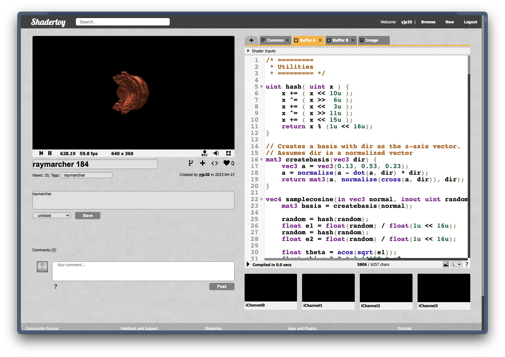
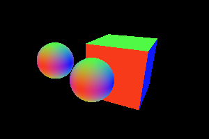
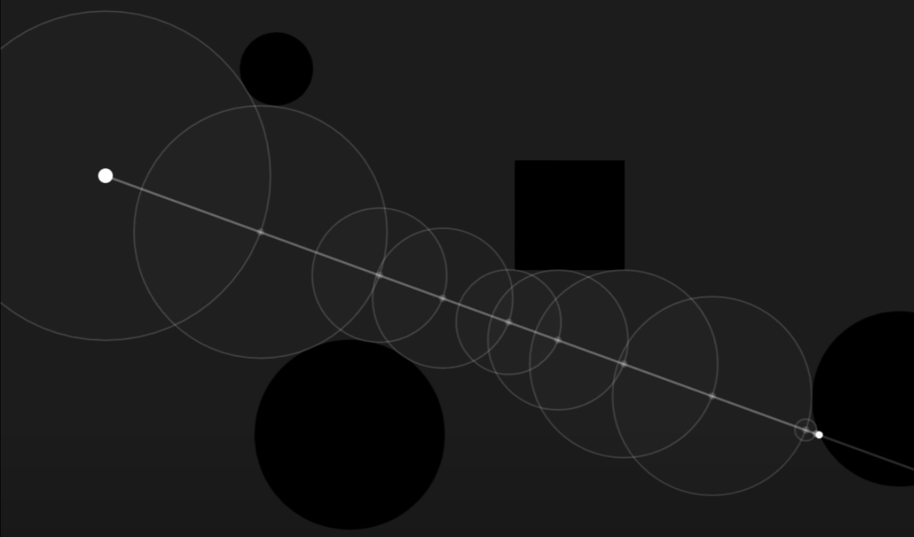
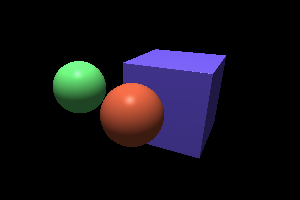
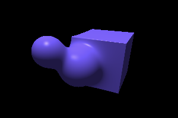
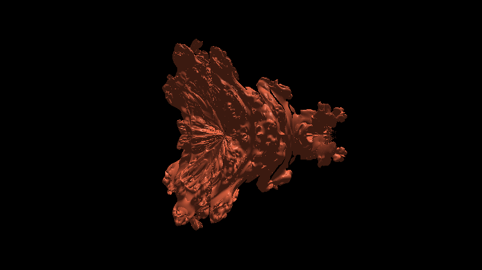

Final Project: Raymarching with SDFs
Team Name: TBD
Xavier Plourde, Eric Zhao, Kenneth Shyle, Young-Jin Park
Proposal
We want to create a basic raymarching engine which can handle some Signed Distance Fields as scenes. Compared to raytracing we covered in class, ray marching is less reliant on triangular meshes and instead render based on mathematical equations which makes it a very powerful tool for procedurally generated art
We plan to add more complex lighting effects and BSDFs parts to the engine, or even finding novel ways to optimize the raymarcher (datastructures, shaders) depending on how well implementing a ray marcher goes.
Finally, we will create an art piece to show off the capabilities of this engine, much like as seen in this video:
To implement the raymarcher itself, we found a couple of resources such as this blog article and this video below
Timeline
Apr. 21th: Basic raymarching intersection (Young-Jin)
Apr. 24th: Colors, BSDFs (Xavier)
Apr. 27th: Optimizations
May 1st: Artpiece
Milestone
https://www.shadertoy.com/view/mltGDr So far, we have used the Shadertoy website to develop a GLSL shader program to create a parallelized, real time raymarching engine. We attempted an implementation of this by modifying the pathtracer code, but we realized that that would take longer than we'd like compared to using a much simpler platform to experiment, while being also significantly less performant. Shadertoy exposes a really simple interface and a very fast dev-loop, with compilation being nearly instantaneous and the results being apparent immediately, with relatively simple modes of interaction. This helped immensely in implementing our engine quickly, despite the fact that GLSL is arguably a less ergonomic language to develop in than C++.
Accomplishments
Our raymarcher is made of a couple of moving parts. First is the SDF, or signed distance function. This function maps some point in 3D space to some value. We consider there to be a surface where ever the value of a certain point is equal to zero. We defined a couple of these for primitives such as circles and boxes, as well as some combinators. For example, taking the min of a couple of sdfs is equivalent to making an SDF that is the 'merged' SDF of the individual components, kind of like adding shapes together. It's a key component in how we build scenes.
Interestingly, taking the max does the opposite, and takes the intersection of two objects. You can even take negative of an object to carve out a hole of that shape, which we do in scene3 to create a box with one side open like that in colorbox of pathtracer.
The second part is the actual raymarching algorithm itself, which is shockingly simple. To find an intersection, we calculate the value of the SDF of the current point in the ray. This gives us the minimum distance that a boundary is at, so we're free to travel that much forward. We can then just move forward by that amount and repeat the process, until we're at a point which is very close to zero, in which case we hit a surface.
Finally, we have the different lighting systems, such and Phong, BSDFs with one bounce, and BSDFs with mutlibounce raytracing. We also implemented a buffer layer which collects data over multiple frames, which reduces noise significantly for scene3. Much of this is very similar to what we implemented in pathtracer.
What we found really interesting and powerful was applications like softmerge, in which we were able to display much more organic shapes very easily. An image like the one above would be far more difficult to create in a meshed-based representation of the scene, involving a lot of geometry and ingenuity, but it's trivial to do in SDFs in a manner that's far more robust as well.

It gets even crazier when we talk about rendering this like fractals. This rendering of the mandlebrot set would be incredibly difficult to do without SDFs.
Timeline
After our work, we decided that it was probably not hugely important to implement optimizations, and instead explore more into what makes raymarching and SDFs so powerful. This involves creating creative scenes with math, implementing more shaders and art primitives for interseting visual effects. Thankfully, we're not behind schedule, and got most of what we wanted to get done at this point finished.
Apr. 21th: Basic raymarching intersection (Young-Jin)
Apr. 24th: Colors, BSDFs (Xavier)
Apr. 27th: Explorations
May 1st: Artpiece
Presentation
Video
Final Report
Artpiece
We wanted to generate an image that would show off the image generating potential of ray-marching we wanted to generate a complicated terrain with numerous crevices and hills that would be difficult to raymarch due to its scale and complexity. This is easily achieved using sdf's as we simply need to provide the distance to the terrain which is trivial when we generate the terrain proceduraly using perlin noise.
The terrain generation is done by layering multiple layers of 3D perlin noise on top of each other in a fourrier fashion where the process involves taking on layer of perlin noise in 3D, rescaling its domain by a factor of 2 and its range by a factor of 1/2 and combining them in a recursive fashion - Note that we also rotate the layers by a fixed amount to create a sense of randomness found in real terrain.